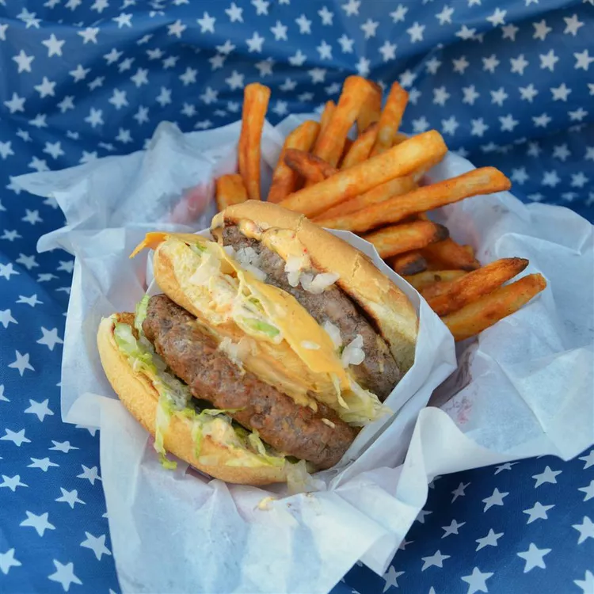

Cheeseburger Recipe

Description
This wonderful cheeseburger recipe is a homemade imitation of the iconic Big Mac, healthier and tastier.
Ingredients
- 2/3 pound ground beef (85% lean)
- 2 cups of mayonnaise
- 2 tablespoons of prepared yellow mustard
- 2 tablespoons of sweet pickle relish
- 1 1/2 teaspoons white wine vinegar, or more to taste
- 1 teaspoon of onion powder
- 1 teaspoon of garlic powder
- 1 teaspoon of ground paprika
- 4 hamburger bun bottoms
- 2 hamburger bun tops
- 2 tablespoons minced onion, or to taste
- 1/2 cup shredded lettuce, or to taste
- 2 tablespoons dill pickle slices, or to taste
- 2 slices of American cheese
- Salt and ground black pepper to taste
Steps
- Shape ground beef into 4 flat patties that will fit the hamburger buns. Place them on a tray lined with waxed paper; transfer to the freezer.
- Mix mayonnaise, mustard, pickle relish, white wine vinegar, onion powder, garlic powder, and paprika in a bowl to make sauce. Refrigerate for 10 minutes.
- Preheat a large skillet over medium heat. Toast buns in batches until lightly golden, 1 to 2 minutes.
- Layer some of the sauce, 1 tablespoon minced onion, 2 tablespoons lettuce, and pickles on 2 bottom buns. Layer some of the sauce and remaining 1 tablespoon minced onion, 2 tablespoons lettuce, and American cheese on the other bottom buns.
- Season patties with salt and pepper. Cook in the hot skillet 2 at a time until browned, 3 to 4 minutes per side. Place 1 patty over each bottom bun; stack and cover with top buns.